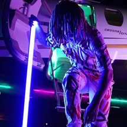
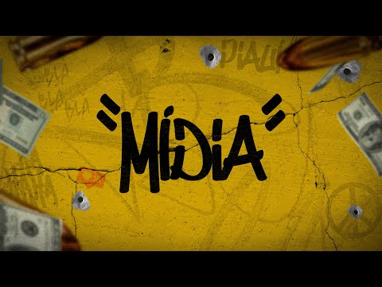

PATAMAR
Clique aqui para escutar Patamar

Nego, a gente vale o que tem
Quando você tem nada, piva, você é ninguém
Abra o seu olho veja quem tava contigo
No momento da derrota só restou os seus amigo (let's go)
Olha os perreco passando mal
Inveja e olho gordo me faz mal
Quem me protegeu foi Deus, fugi da guilhotina
No momento do sufoco teve várias armadilhas
Eu não vou mais deixar eles me machucar
Porque não estou
No mesmo patamar
Eu não vou mais deixar eles me machucar
Porque não estou
No mesmo patamar
Cicatrizes da minha mente
Piva, eu lembro e choro
Agradeço ao Nordeste por me manter no pódio
Eu não sou santo mas não minto na oração
Tô apressado quero minha melhor versão (ye)
Pra mim, pros meus irmãos
Eu tô focado na missão
Eu sei, a vida é amarga
Eu tô adoçando com sifrão
Até a tua sombra te abandona quando tá na escuridão (let's go)
E não importa a ocasião, tô focado na missão
Pelo bem da minha saúde mental
Onde eu chego eu me faço de doido
Mas eu sei bem quem são de verdade e quem são os baba-ovo
É gratidão pra quem acreditou em mim
Pra quem me jogou no buraco aqui é gratidão em dobro
Mas dessa vez foi diferente
Eu virei amigo da Samara quando cheguei no fundo do poço
Aprendi lições que não aprendem no topo (ye)
A zona de guerrear, minha zona de conforto
Tu me deseja eu te desejo em dobro
E te surpreendo mais uma vez e de novo
E com o meu esforço
Eu me destaco no mundão e você vê que não é conversa do povo
Eu tô aqui de novo
E se tu não gostou da minha rima então chupa o meu ovo
Nego, a gente vale o que tem
Quando você tem nada, piva, você é ninguém
Abra o seu olho veja quem tava contigo
No momento da derrota só restou os seus amigo (let's go)
Olha os perreco passando mal
Inveja e olho gordo me faz mal
Quem me protegeu foi Deus, fugi da guilhotina
No momento do sufoco teve várias armadilhas
Eu não vou mais deixar eles me machucar
Porque não estou
No mesmo patamar
MÍDIA
Clique aqui para escutar Mídia

Quanto mais a mídia fala, mais eu converto em dinheiro pra mim
Eu já vi de tudo, não esqueço quem sou, de onde eu vim
O teu comentário eu curto e comento: Hahahaha
Tô acostumado, o que cês falam é só blá-blá-blá
Quanto mais a mídia fala, mais eu converto em dinheiro pra mim
Eu já vi de tudo, não esqueço quem sou, de onde eu vim
O teu comentário eu curto e comento: Hahahaha
Tô acostumado, o que cês falam é só blá-blá-blá
Quando eu tive a percepção
Meti pressão e marcha, agradeço ao Senhor e a minha intuição
Oh, yeah, é que eu escuto bem o sussurro da alma
Como se tivesse tomado Red Bull, do nada ele sabia voar
O mundo ele foi ganhar, se fosse um Deus, era xiva
Nine esbagaça o beat, o Deus da destruição
Oh, yeah, nada é o fim pra quem sabe nascer das cinza
Nem me avisou
Avisar o quê, man?
Tu vai viajar agora pra Austrália
Viajar aonde?
Cê acabou de sair aqui, ô
Aonde, man?
Aqui no site de notícia, aqui, fofoca
Tu tá, tu tá vendo negócio de fofoca de TV, olha o nome do site, mano, Fofocas TV Oficiais
Quanto mais a mídia fala, mais eu converto em dinheiro pra mim
Eu já vi de tudo, não esqueço quem sou, de onde eu vim
O teu comentário eu curto e comento: Hahahaha
Tô acostumado, o que cês falam é só blá-blá-blá
Quanto mais a mídia fala, mais eu converto em dinheiro pra mim
Eu já vi de tudo, não esqueço quem sou, de onde eu vim
O teu comentário eu curto e comento: Hahahaha
Tô acostumado, o que cês falam é só blá-blá-blá
Pois eu sou o Arthurzim, cheguei, mas tô saindo fora
Antes do flash me notar, levei a dama embora
Quer viver uma noite com o vetin, então a hora é agora
Do nada pisou de Air Force, vai de doze mola
Ooh, wait, sheesh, sempre tenho, jogando Fendi
Tentando saber da minha vida
Tô nem vendo, eu fumo um verde
Eu que sou a mídia, ô, ê, ô, ê, ô
Quanto mais a mídia fala, mais eu converto em dinheiro pra mim
Ah, essa parte eu vou deixar com o Lil memo, ó, Lil Whind
Quanto mais a mídia fala, mais eu converto em dinheiro pra mim
Eu já vi de tudo, não esqueço quem sou, de onde eu vim
O teu comentário eu curto e comento: Hahahaha
Tô acostumado, o que cês falam é só blá-blá-blá
Quanto mais a mídia fala, mais eu converto em dinheiro pra mim
Eu já vi de tudo, não esqueço quem sou, de onde eu vim
O teu comentário eu curto e comento: Hahahaha
Tô acostumado, o que cês falam é só blá-blá-blá
POPO
Clique aqui para escutar Popó
Já senti perfume diferenciado
Mas o teu insiste em ficar no meu faro
Como não lembrar, se sempre quando eu fumo
No primeiro puxa, no peito eu te trago?
Seu sotaque soa como poesia
E eu viro o José de Alencar do teu lado
Pertenço ao nordeste, eu sou do repente
De repente eu faço virar comentário
Eu queria ser o Popó, mas o Popó nunca vou poder ser
O Popó soca todo mundo, eu só quero socar em você
Vai rebola a raba e toma tapa que é pra tu aprender
Tipo Baianin de Mauá, vou encaçapando em você
Sentar com força, desse jeito não é normal
É que a sentada dessa moça é algo sobrenatural
Que essa raba não paga imposto, isso é um crime federal
Ela não é o Papai Noel, mas me deu um presente de Natal
Eu queria ser o Popó, mas o Popó nunca vou poder ser
O Popó soca todo mundo, eu só quero socar em você
Vai rebola a raba e toma tapa que é pra tu aprender
Tipo Baianin de Mauá, vou encaçapando em você
Já senti perfume diferenciado
Mas o teu insiste em ficar no meu faro
E, como não lembrar, se sempre quando eu fumo
No primeiro puxa, no peito eu te trago?
Seu sotaque soa como poesia
E eu viro o José de Alencar do teu lado
Pertenço ao nordeste, eu sou do repente
De repente eu faço virar comentário
Eu queria ser o Popó, mas o Popó nunca vou poder ser
O Popó soca todo mundo, eu só quero socar em você
Vai rebola a raba e toma tapa que é pra tu aprender
Tipo Baianin de Mauá, vou encaçapando em você
Sentar com força, desse jeito não é normal
É que a sentada dessa moça é algo sobrenatural
Que essa raba não paga imposto, é crime federal
Ela não é o Papai Noel, mas me deu um presente de Natal
Eu queria ser o Popó, mas o Popó nunca vou poder ser
O Popó soca todo mundo, eu só quero socar em você
Vai rebola a raba e toma tapa que é pra tu aprender
Tipo Baianin de Mauá, vou encaçapando em você